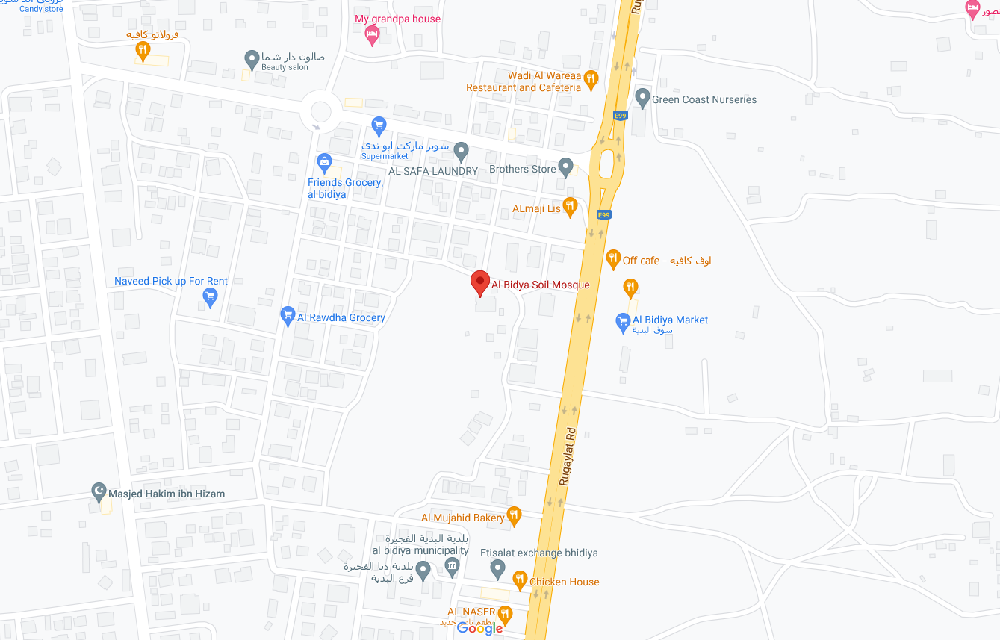
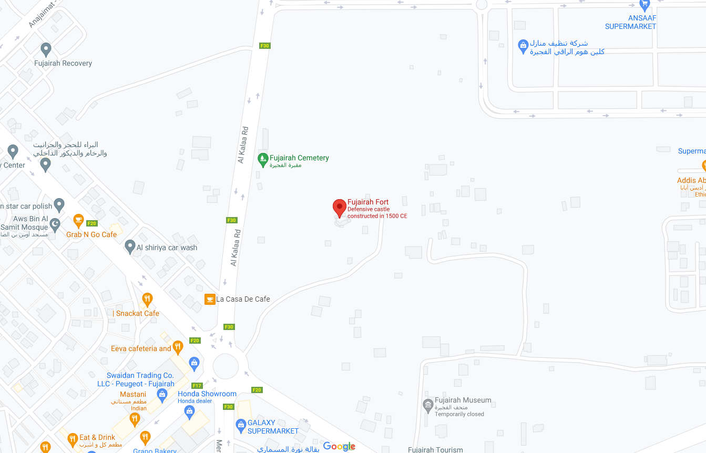

Welcome to Fujairah

Al-Bidyah Mosque
Fujairah Fort

About 35 kilometers north of Fujairah city, the mud-brick Al-Bidyah Mosque is the oldest in the United Arab Emirates and was named after the town that once surrounded it. The engineering features are a major accomplishment for the period of construction. The mosque consists of a prayer hall, decorated with arches and featuring ventilation openings and a mihrab (prayer niche pointing to Mecca). A central pillar divides the internal space into four squares of similar dimensions, covered by domed ceilings.
Built in 1670, Fujairah Fort was badly damaged by a British attack in the early 20th century. Considered the oldest fort in the United Arab Emirates, it has served previously as both a defensive building and a home for the ruling family. And for many centuries, it was the only stone building along the Fujairah coast. The fort has three major sections, several halls, one square tower, and two round towers. In recent years, it has been fully restored to its former glory.
Bull butting was introduced to the United Arab Emirates by colonizers from Portugal. In Fujairah, bull butting takes place every Friday during the cooler months and is a popular family event. The day begins with 20 bulls battling each other, and numbers slowly dwindle as winners move on to the next round.